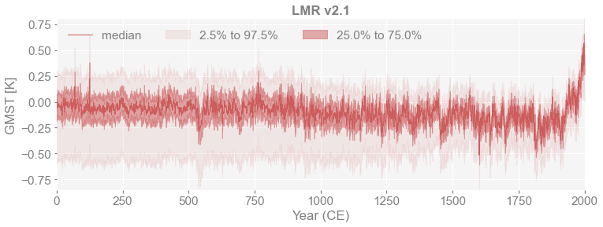
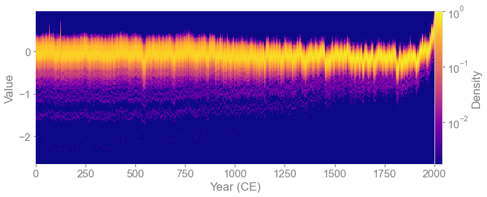
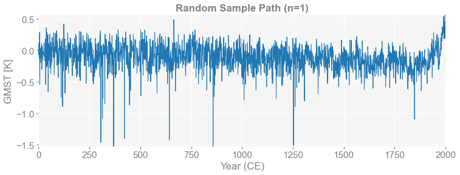
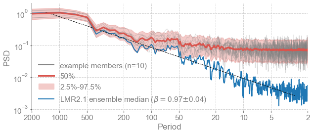
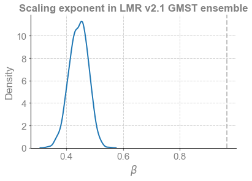

Impact of path on spectral estimates in an offline DA product: the Last Millennium Reanalysis
Contents
Impact of path on spectral estimates in an offline DA product: the Last Millennium Reanalysis#
[7]:
%load_ext autoreload
%autoreload 2
# import the pens package (https://github.com/fzhu2e/pens)
import pens
The autoreload extension is already loaded. To reload it, use:
%reload_ext autoreload
Load LMR 2.1 data from a local .nc file#
[8]:
# Load LMR global-mean data
ens = pens.EnsembleTS().load_nc('./data/gmt_MCruns_ensemble_full_LMRv2.1.nc', var='gmt')
print(ens.value.shape)
print(ens.nt)
print(ens.nEns)
(2001, 2000)
2001
2000
Plot the quantiles of the ensembles#
[9]:
fig, ax = ens.plot_qs(ylabel='GMST [K]', title='LMR v2.1')

Plot the ensembles in the form of line density#
[10]:
fig, ax = ens.line_density(color_scale='log', bins=[500, 100])

Get and plot random sample paths from the ensembles#
[11]:
for n in [1, 3]:
ps = ens.sample_random(n=n, seed=2333)
fig, ax = ps.plot(ylabel='GMST [K]', title=f'Random Sample Path (n={n})')
print(ps.value.shape)
(2001, 1)
(2001, 3)


Obviouskly, sampling from this ensemble will change the assessment of the timing of certain events (e.g. extreme cooling) in a given series, though the distribution is invariant. How does this affect the estimation of spectral features?
Impact on spectral features: peaks and continuum#
Convert the series to a pyleoclim EnsembleSeries object to easily estimate spectra
[12]:
ps = ens.sample_random(n=1000, seed=2333)
es = ps.to_pyleo()
[13]:
es_spec = es.spectral(method='mtm')
Performing spectral analysis on individual series: 100%|██████████| 1000/1000 [00:59<00:00, 16.84it/s]
[14]:
fig, ax = es_spec.plot_envelope()
# extract and analyze the ensemble median
esm = ps.get_median()
esm = esm.to_pyleo(label='LMR2.1 ensemble median')
esm_spec = esm.spectral(method ='mtm')
esm_beta = esm_spec.beta_est() # estimate spectral exponent
esm_beta.plot(ax=ax)
[14]:
<AxesSubplot:xlabel='Period', ylabel='PSD'>

Estimate and plot scaling exponents#
[15]:
import seaborn as sns
es_beta = es_spec.beta_est() # estimate scaling exponents
ax = sns.kdeplot(es_beta.beta_est_res['beta'],label='sample paths') # plot their distribution
ax.set_xlabel(r'$\beta$')
ax.set_title('Scaling exponent in LMR v2.1 GMST ensemble',fontweight='bold')
ax.axvline(x=esm_beta.beta_est_res['beta'],ymin=0,ymax=10,ls='--',lw=2, color='black',label='median') # add the scaling exponent of the median trajectory
ax.legend(loc='upper center')
[15]:
<matplotlib.legend.Legend at 0x29093b310>

Evidently, sampling from the ensemble has a great impact on the estimated spectral slope. It is expected that online DA would greatly mitigate this effect.